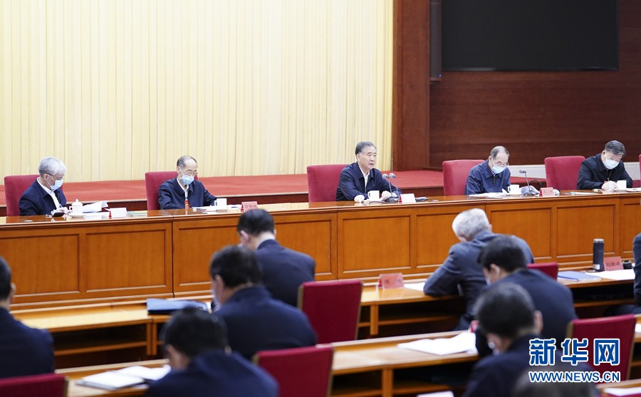

汪洋：推动新时代统战工作高质量发展
发布时间：2021-04-09 09:32:39 作者：
新华社北京4月7日电 统一战线深入学习贯彻《中国共产党统一战线工作条例》研讨班4月7日在京开班，中共中央政治局常委、全国政协主席汪洋出席开班式并讲话。他强调，要深入学习贯彻习近平总书记关于加强和改进统一战线工作的重要思想，深刻认识修订统战工作条例的重要意义，全面准确掌握条例的基本精神、主要内容和工作要求，以钉钉子精神推动条例落地落实，最大限度发挥统一战线法宝作用，为全面建设社会主义现代化国家、实现中华民族伟大复兴广泛凝心聚力。
汪洋指出，统战工作条例是统一战线理论政策成果的集大成，是统战工作的总规范，为新时代统一战线事业创新发展提供了重要的政治保障、组织保障、法治保障。学习贯彻条例，要以加强党的领导为根本准则，把党的领导贯穿统一战线各领域和统战工作全过程；要以解决问题为工作导向，着力破解统战领域的深层次矛盾，补齐工作中的短板弱项；要以加强党外代表人士队伍建设为基础工程，更好发挥“一根头发”带动“一把头发”的作用；要以加强统战部门自身建设为有力保障，抓好干部教育培训，夯实基层基础，切实解决能力不足、本领恐慌的问题；要以坚持守正创新为重要理念，发扬统战工作的优良传统，积极推进思路理念、方式方法和体制机制创新，提高统战工作科学化规范化制度化水平。
汪洋强调，统战工作解决的是人心和力量问题，政治性是统战工作的第一属性，必须树牢政治意识，加强政治历练，提高政治能力。要不断提高政治判断力，善于运用政治观点和政治眼光看待统战工作，科学把握形势变化、精准识别现象本质、清醒明辨是非对错、有效抵御风险挑战。要不断提高政治领悟力，善于从党中央决策部署中找准坐标、把准方向、瞄准靶心，完整准确领会党中央关于统战工作的大政方针，做到对“国之大者”了然于胸、对责之重者善担于肩。要不断提高政治执行力，善于在学深悟透的基础上创造性地开展工作，增强调查研究、科学决策、解决问题、团结引导的能力，不断推动新时代统战工作高质量发展。
开班式由中共中央书记处书记、中央统战部部长尤权主持。万鄂湘、陈竺、丁仲礼、郝明金、蔡达峰、武维华、万钢、陈晓光、苏辉、郑建邦、辜胜阻、刘新成、何维、邵鸿、高云龙等各民主党派中央和全国工商联负责人，无党派人士代表，各省区市、新疆生产建设兵团党委统战部部长，中央统战部领导班子成员参加研讨班。
来源：新华网